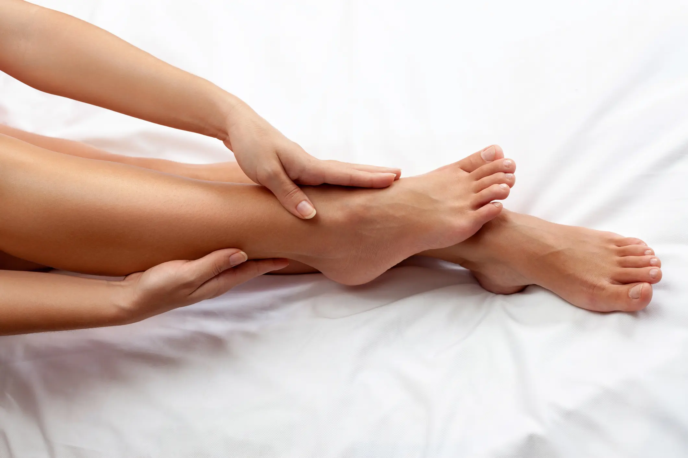

Rutina facial para recuperar luminosidad sin perder naturalidad
Cómo combinar limpieza, hidratación y tratamientos profesionales para que la piel vuelva a sentirse fresca y luminosa.
Leer guíaGuías claras para cuidar tu piel, tus manos, tus pies y tu bienestar desde una mirada profesional y cercana.
Cómo combinar limpieza, hidratación y tratamientos profesionales para que la piel vuelva a sentirse fresca y luminosa.
Leer guía.jpeg)
Una guía clara para entender la maderoterapia dentro de un protocolo corporal personalizado.
Leer artículo
Qué debes saber antes de un tratamiento de BB Glow y cómo cuidar la piel después de la sesión.
Leer artículo
Consejos para mantener tus uñas bonitas durante más tiempo sin comprometer la salud de la uña natural.
Leer artículo
Cómo encaja la presoterapia en una rutina de bienestar corporal y qué conviene revisar antes de la primera sesión.
Leer artículo
Aspectos importantes para elegir diseño, color e intensidad cuando buscas una mirada definida pero natural.
Leer artículo